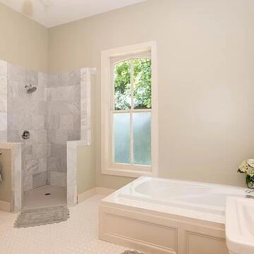
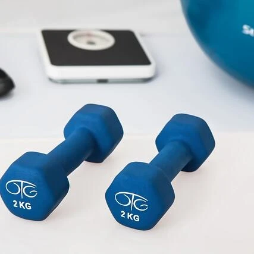
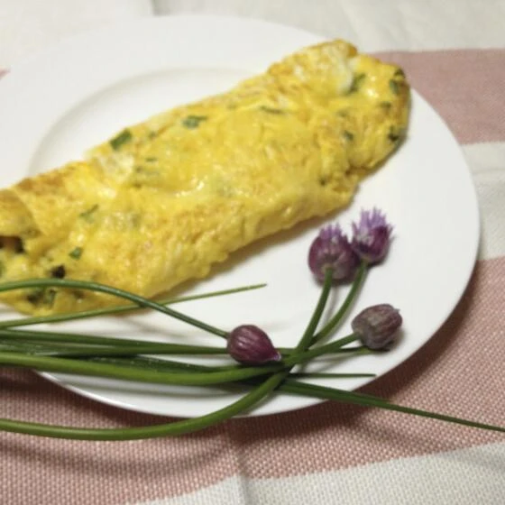
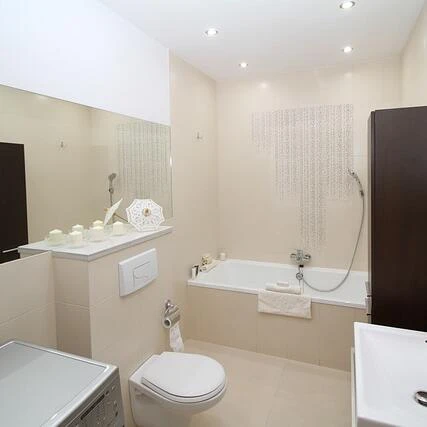
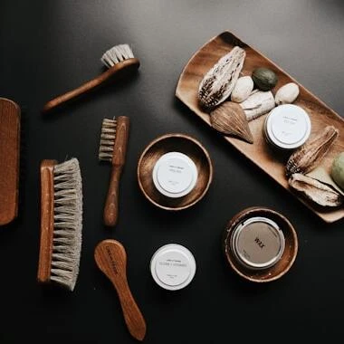
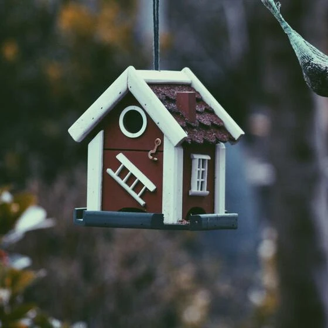
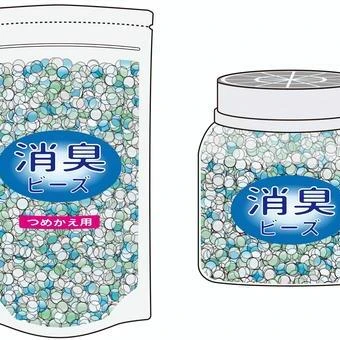
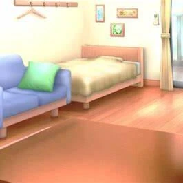

初心者でも簡単！手軽に部屋にグリーンを取り入れる方法
こんにちは✨ 富山県で自然素材の家づくりをしている「フジ創」です✨ 初心者でも簡単！手軽に部屋にグリーンを取り入れる方法 目に鮮やかなインテリアグリーンは、小さなものを生活に取り入れるだけでも、空間演出効果が抜群です。特
続きを読む →FUJISOU AINOS JOURNAL
家づくりのこと、暮らしのこと。
日々の想いを、お伝えします。
新しい記事から 4・40ページ
こんにちは✨ 富山県で自然素材の家づくりをしている「フジ創」です✨ 初心者でも簡単！手軽に部屋にグリーンを取り入れる方法 目に鮮やかなインテリアグリーンは、小さなものを生活に取り入れるだけでも、空間演出効果が抜群です。特
続きを読む →
こんにちは✨ 富山県で自然素材の家づくりをしている「フジ創」です✨ 「免疫力アップのための食べ物」 免疫とは、ウイルスや病原菌から体を守り戦う「抵抗力」のこと。体内にウイルスや細菌、花粉などの"異物"を侵入させないように
続きを読む →
こんにちは✨ 富山県で自然素材の家づくりをしている「フジ創」です✨ 庭シリーズ✨2025 「お庭でアスパラガス」 アスパラガスは種まきから収穫までに通常3年かかるので、家庭菜園で実生から育てるので大変です。 大苗を入手す
続きを読む →こんにちは✨フジ創の稲葉です✨ 2025年の庭シリーズをご紹介していきます✨ ・お庭でニンジン栽培・ お庭で野菜を栽培する場合、育てやすいのはミニサイズのニンジンです✨ 通常サイズのニンジンは種まきから収穫までに４か月程
続きを読む →
こんにちは✨ 富山県で自然素材の家づくりをしている「フジ創」です✨ 「寒い季節を快適に過ごすため」 ・冷え症の種類 冷え症には様々なタイプと症状があるようですが、大きく分けて以下の4つに分類されることが多いようです。 ●
続きを読む →こんにちは✨ 自然素材の家づくりをしている「フジ創」です✨ 「冬の養生」で体を整えよう。心地良く冬を過ごすための、暮らしのヒント」 「養生」とは、健全な生命を養うこと 「養生」とは「生命を養う」ことを意味し、より健康な状
続きを読む →
新年あけましておめでとうございます。 2025年もよろしくお願いいたします。 自然素材の家づくりをしている「フジ創」です✨ 「 冬の体調を整える食べ物とは？家族みんなで元気に冬を乗り切ろう！ 」 寒い日が続きますが、皆さ
続きを読む →こんにちは✨ 富山県で自然素材の家づくりをしている「フジ創」です✨ 冬の手乾燥のついておすすめハンドクリーム 「 さらさら感と保湿力を両立し手元を美しく保つ 」 手肌の乾燥を防ぎ保湿するハンドクリームは、使用感の好みがわ
続きを読む →こんにちは✨ 富山県で自然素材の家づくりをしている「フジ創」です✨ お庭特集から、、 「 お庭でいちご✨栽培」 ・ここでは鉢植え栽培の方法をご紹介いたします✨ イチゴ の秋に植えて初夏に収穫する「 一季なり 」と、春に植
続きを読む →
こんにちは✨ フジ創の稲葉です✨ ✨テーマ✨ 「 お庭でチャイブ栽培 」 ・ユリ科ネギ属の多年草。タネ は霜が降りなくなる時期の約２か月前に室内で撒いおきます。 苗は春頃、園芸店に並びます。 成長したサイズは高さ幅ともに
続きを読む →こんにちは✨ フジ創の稲葉です✨ 「 鍋焼きうどんのおすすめ。冬にぴったりな温まる一品 」 ・寒い季節にぴったりの「鍋焼きうどん」。鍋であたためるだけで作れる手軽さが魅力です。鰹や昆布などのだしが効いたモノや冬季限定のみ
続きを読む →
こんにちは、フジ創です。 寒い冬、入浴時の寒暖差で「ヒートショック」の危険性が高まります。 ご年配の方での発生率が高いものの、若い人でもヒートショックが起きる可能性があります。 そこで今回は、ヒートショックの予防方法をご
続きを読む →こんにちは✨ 自然素材の家づくりをしている「フジ創」です✨ 「オランダからの知恵」 ・記録的な豪雨や台風によって、近年、日本各地で大規模な洪水が頻発しています。 普段は穏やかな河川も、降り続ける☔によってたちまち氾濫し、
続きを読む →
こんにちは✨ 富山県で自然素材の家づくりをしている 「フジ創アイノス」です✨ ✨テーマ✨ 「洗濯ブラシのおすすめ✨襟汚れなどにぴったりなアイテム」 ・ 衣類の汚れなどをしっかりと落としたいときに便利な「洗濯ブラシ」。繊維
続きを読む →
こんにちは✨ 自然素材の家づくりをしている フジ創アイノスです✨ ✨テーマ✨ 「 家族の理想の家」 ・ 「理想の家」について語ることは、家族の絆を深める大切なコミュニケーションになり得ます。 特に最近、家庭内の問題が子ど
続きを読む →こんにちは✨ フジ創の稲葉です✨ 「今人気の平屋における7つのメリットと5つのデメリットを検証。」 １，平屋とは？平屋が人気の理由 平屋とは、1階部分のみの建物のことです。一般的な平屋住宅の場合、階段がなく、リビングやキ
続きを読む →こんにちは✨ フジ創の稲葉です✨ もう、世間はクリスマスモード突入ですね✨ そんなホリデーシーズンをお家で楽しむなら、やっぱり欠かせないのが「 クリスマスツリー✨」 せっかくツリーを飾るなら、おしゃれでお部屋に馴染むよう
続きを読む →
こんにちは✨ フジ創の稲葉です✨ 「消臭ビーズのおすすめ✨選び方も合わせてご紹介 」 ニオイが気になる空間に置くことで消臭効果を期待できる「消臭ビーズ」。置き型消臭剤の一種で、中に入っているゼリー状のビーズによって消臭
続きを読む →こんにちは✨ フジ創の稲葉です✨ 注文住宅 メリット デメリット 注文住宅には多くのメリットとデメリットがあります。以下は主なポイントです。 メリット 自由な設計 : 家族のライフスタイルや希望に合わせた間取りやデザイン
続きを読む →こんにちは✨ フジ創アイノスの稲葉です✨ 2024年も、あっという間に終わりが近づいてきましたね✨ そんな慌ただしい年末の一大イベントといえば、そう、 「大掃除」 です（笑） 私自身、いつもバタバタで、大掃除が中途半端で
続きを読む →こんにちは✨ フジ創の稲葉です✨ お役立ち記事を更新していきます✨ 私がおすすめするコラム記事です✨ いいな～と思える記事をご紹介いたします✨ サキドリ というサイトから、おすすめ記事を選び皆さんに、読んでもらいたいとい
続きを読む →こんにちは✨ フジ創アイノスの稲葉です✨ 私がおすすめするコラム記事です✨ いいな～と思える記事をご紹介いたします✨ サキドリ というサイトから、おすすめ記事を選び皆さんに、読んでもらいたいという記事を こちらでご紹介し
続きを読む →
こんにちは、 フジ創アイノスです✨ 眠りの家学⑤をご紹介いたします。 私が読んでみて興味をもったのをご紹介しています✨ 本日も、よろしくお願いいたします✨ ✨テーマ✨ 「人の体内時計は25時間」 フランスの国立保健医学研
続きを読む →こんにちは、 フジ創アイノスです✨ 眠りの家学④の続きをご紹介いたします。 ✨テーマ✨ 「サーカセミディアンリズム」 私たちの体の中には、 サーカディアンリズム の他に、さらにもうひとつのリズムがあります。 それは サー
続きを読む →